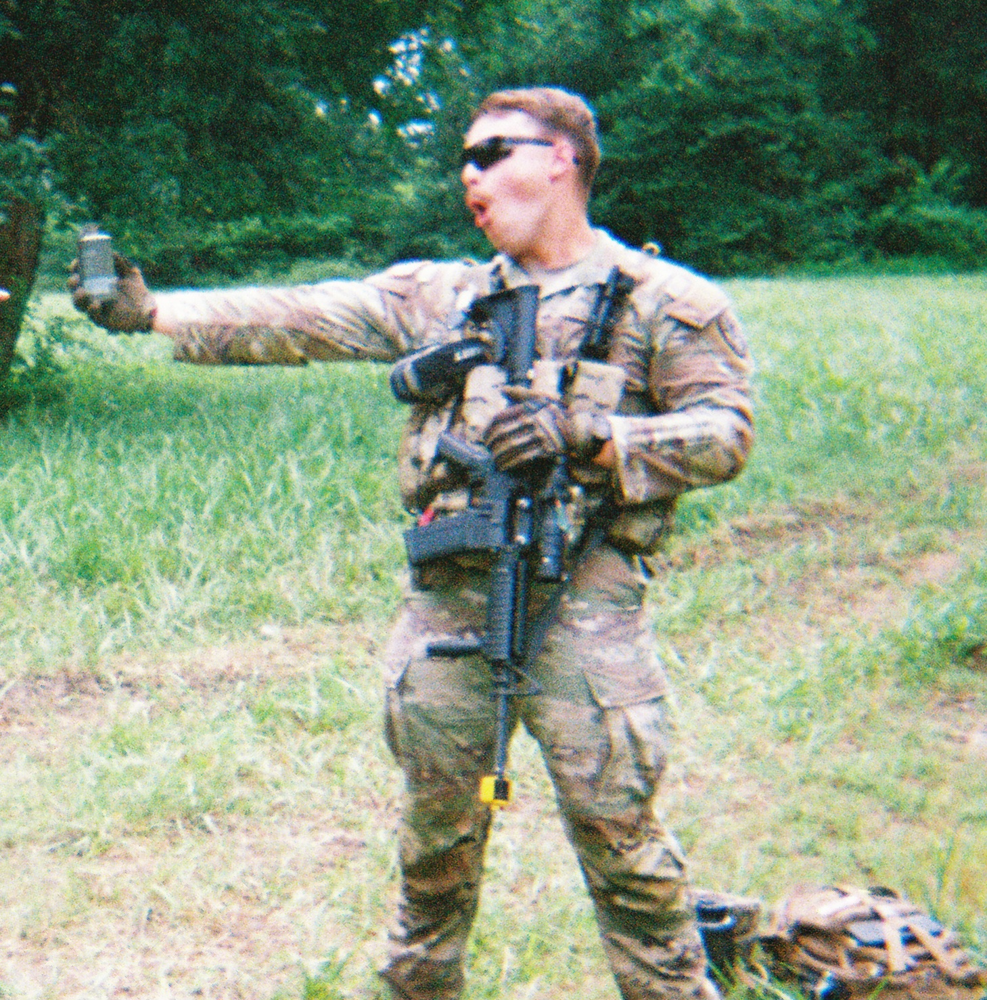
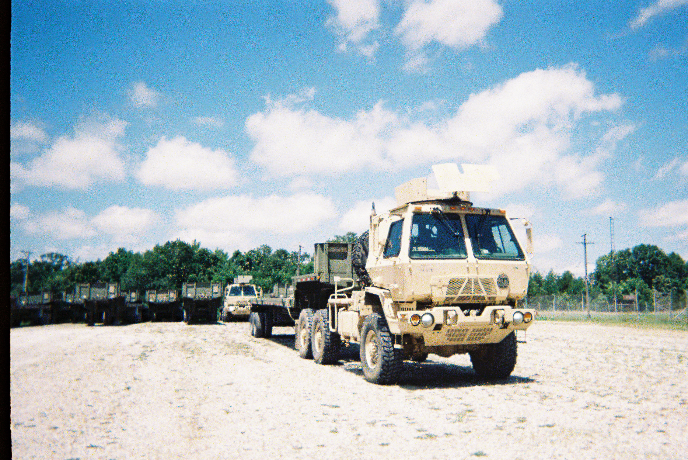

Yep, that my name, don't wear it out! Computer Science student, U.S. Army NCO, and software developer focused on Linux systems, DevOps, automation, and backend development. I enjoy building reliable systems, automating repetative work, and solving problems at the intersection of software, infastructure, and engineering.
Download ResumeDevolop a strong foundation in software engineering, systems programming, algorithms, databases, operating systems, and computer architecture. Build projects spanning C/C++, Python, web applications, database systems, graphics, and Linux environments.
Jan 2022 -> May 2027
Apply my computer science background to research by developing automation tools for extracting, organizing, and preparing research documents and data for AI-driven analysis. Work with faculty and graduate researchers while maintaining detailed technical documentation and reproducible processes.
Conduct interdiciplinary research for the Critical Materials Innovation Hub (CMI), investigating electrochemical processes through experimental methods, quantitative analysis and reproducible workflows.
May 2024 -> Aug 2024, May 2026 -> Present
Lead teams and manage transportation operations on state and federal missions. Coordinated personnel, equipment, and logistics while maintaining accountability for high-value equipment and operating effectively in high-tempo environments.
Develop practical experience in leadership, systems management, documentation, troupbleshooting, and operational planning.
Active DoD Secret Clearance
Jun 2020 -> Present


Designed and maintain a Linux-based server environment running Debian, Nginx, Gunicorn, Flask, MariaDB, SSH, and Cloudflare Tunnels to host and deploy my personal website (isaacstephens.com) and applications. Manage server configuration, networking, DNS, security, and application deployment.
GitHubMissouri University of Science & Technology — B.S. Computer Science
Minors: Computer Engineering & Mathematics
GPA: 3.3 | Expected Graduation: Spring 2027
Coursework:
My background combines computer science with hands-on experience in engineering research and military operations. Through the Critical Materials Innovation Hub, I have worked alongside materials researchers and gained exposure to electrochemical processes, critical-materials research, experimental data, and scientific workflows.
This combination of software , systems, and engineering experience gives me an interest in applying computing and automation to industries such as mining, critical materials, manufacturing, energy, defense, and national labratory research.
When I’m not coding, I lift heavy circles as a powerlifter, worldbuild for my ongoing D&D campaigns, explore new open-source projects, and keep my home network running efficiently with as little money as possible (lol this server is running off a $15 computer from the S&T surplus store, and I love it that way). I'm also an active member of the Baptist Student Union at Missouri S&T where I serve on the worship team :)